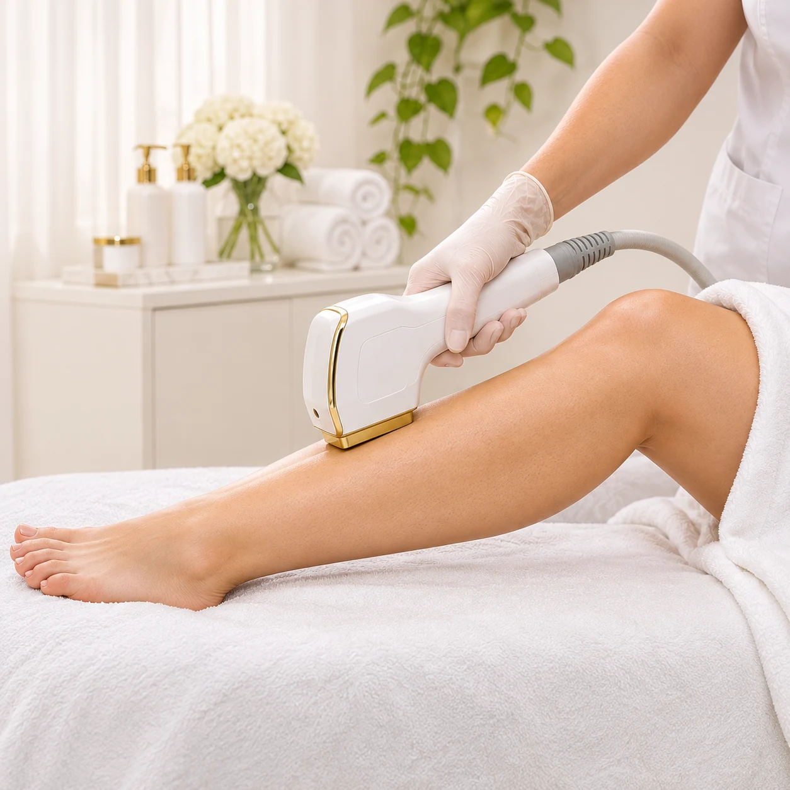

Un cuidado que simplifica tu rutina.
Depilación láser
¿En qué consiste?
Un tratamiento orientado a reducir progresivamente el crecimiento del vello mediante energía lumínica. Requiere varias sesiones y una evaluación previa: la respuesta depende del vello, la piel y el equipo utilizado.
¿Cómo es una sesión?
En cada encuentro se revisa la zona, se prepara la piel y se realiza la aplicación con los cuidados adecuados. Lucy define la duración y la frecuencia según tu evaluación.

La información es orientativa. Los resultados y la indicación dependen de la evaluación individual.